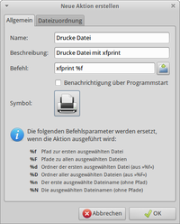

Benutzerdefinierte Aktionen
Dieser Artikel wurde für die folgenden Ubuntu-Versionen getestet:
Dieser Artikel ist größtenteils für alle Ubuntu-Versionen gültig.
Zum Verständnis dieses Artikels sind folgende Seiten hilfreich:
Benutzerdefinierte Aktionen erweitern die Funktionalität des Dateimanagers Thunar und werden im Kontextmenü  aufgeführt. Das erlaubt schnellen Zugriff auf diverse Kommandos und Programme aus dem Dateimanager heraus. In Kombination mit Skripten hat man mit dieser Funktion quasi unbegrenzte Möglichkeiten.
aufgeführt. Das erlaubt schnellen Zugriff auf diverse Kommandos und Programme aus dem Dateimanager heraus. In Kombination mit Skripten hat man mit dieser Funktion quasi unbegrenzte Möglichkeiten.
Es gibt zwei Wege, um Aktionen zu erstellen:
mit Thunar und dem Dialog "Bearbeiten -> Benutzerdefinierte Aktionen..."
mit einem Editor
Thunar-Dialog¶

Als Beispiel soll eine Textdatei ausgedruckt werden. Das folgende Beispiel gilt nur für Ubuntu 12.04, da das Paket xfprint4 bei neueren Ubuntu-Versionen nicht mehr in den offiziellen Paketquellen enthalten ist. Alternativen sind im Artikel Xfce Power User Tips, Tricks & Tweaks: Working With Documents  aufgeführt.
aufgeführt.
"Bearbeiten -> Benutzerdefinierte Aktionen..." aufrufen,
anwählen,
Reiter Allgemein
Name:
Drucke DateiBeschreibung:
Drucke Datei mit xfprintBefehl:
xfprint4 %f
Reiter Dateizuordnung
Dateimuster:
*[] Textdateien anwählen
OK
Die neue Aktion zum Drucken von Textdateien erscheint in den benutzerdefinierten Aktionen.
| Einstellungen | |
| Element | Inhalt |
| neue Aktion hinzufügen | |
| ausgewählte Aktion bearbeiten | |
| angewählte Aktion entfernen | |
| Aktionsmenü sortieren. | |
Beispiele¶
Hier ein paar weitere Beispiele, um die Liste mit den Aktionen zu erweitern.
"Senden an"-Funktion¶
Einige der hier aufgeführten Aktionen lassen sich mit der "Senden an"-Funktion noch bequemer und übersichtlicher nutzen.
Archive entpacken mit unp¶
Das Perl-Skript unp muss zuerst installiert werden.
Name:
Entpacke hier...Befehl:
unp %fDateizuordnung:
*.tar.bz2;*tar.gz;*.tbz2;*.zip;*.rarErscheint falls ausgewählt: Andere Dateien
Spiele Musik¶
Name:
Spiele mit AudaciousBefehl:
audacious2 %fDateizuordnung:
*.mp3;*.MP3Erscheint falls ausgewählt: Ordner / Audio Dateien
Weitere Informationen im Artikel Audacious.
Enqueue Musik¶
Name:
Zu Audacious hinzufügenBefehl:
audacious2 -e %fDateizuordnung:
*.mp3;*.MP3Erscheint falls ausgewählt: Ordner / Audio Dateien
Brennen¶
Name:
Brenne mit K3bBefehl:
k3b -cdimage %fDateizuordnung:
*.isoErscheint falls ausgewählt: Andere Dateien
Weitere Informationen im Artikel K3b.
Bilder anzeigen¶
Name:
Zeige mit GeeqieBefehl:
geeqie %fDateizuordnung:
*Erscheint falls ausgewählt: Ordner, Bilddateien
Weitere Informationen im Artikel Geeqie.
Konvertiere von PNG nach JPEG¶
Name:
png2jpgBefehl:
convert %f -quality 75 %f.jpgDateizuordnung:
*.png;*.PNGErscheint falls ausgewählt: Bilddateien
Weitere Informationen im Artikel ImageMagick.
JPGs drehen¶
Name:
Rotiere JPEG-Dateien verlustfreiBefehl:
for file in %f; do tempfile=$(mktemp); (jpegtran -rotate 90 $file > $tempfile); mv -f $tempfile $file; rm -f $tempfile; doneDateizuordnung:
*.jpg;*.JPG;*.jpeg;*.JPEGErscheint falls ausgewählt: Bilddateien
Bilder drehen¶
Name:
Bild drehenBefehl:
convert %f -rotate 90 %D/%N_turnedBeschreibung: Eine beliebige Bilddatei wird um 90° im Uhrzeigersinn gedreht – und am gleichen Ort als DATEINAME_turned ausgegeben. Funktioniert nicht bei JPG-Dateien.
Erscheint falls ausgewählt: Bilddateien
Exif-Daten entfernen¶
Name:
Exif-Daten löschenBefehl:
jhead -purejpg %fDateizuordnung:
*.jpg;*.JPG;*.jpeg;*.JPEGErscheint falls ausgewählt: Bilddateien
Weitere Informationen im Artikel JHead.
Prüfsumme mit md5sum berechnen¶
Grafische Ausgabe der Prüfsumme mit md5sum:
Name:
md5sum-PrüfsummeBefehl:
zenity --info --title="Create md5sum for %n" --text="$(md5sum %f)"Dateizuordnung:
*.iso; *.img; *.usbErscheint falls ausgewählt: andere Dateien
Alternativ kann man auch eine Datei QUELLE.md5 erstellen lassen:
Name:
md5sum-Prüfsumme speichernBefehl:
md5sum %f > %N.md5Beschreibung: Die Prüfsumme der ausgewählten Datei berechnen und speichern
Erscheint falls ausgewählt: alle Dateien
Öffne in Terminal¶
Name:
Öffne in einem TerminalBefehl:
terminal --working-directory=%dDateizuordnung:
*Erscheint falls ausgewählt: Ordner
Weitere Informationen zum Terminal.
Öffne Shellskript in Terminal¶
Name: Öffne Shellskript (.sh) in Terminal
Beschreibung:
Führt das .sh Script im Terminal aus.Befehl:
xfce4-terminal --hold --working-directory=%d -x ./%nDateizuordnung:
*.shErscheint falls ausgewählt: Textdateien
Alternatives Terminal¶
Name:
Öffne in TerminalBefehl:
cd /%f && xtermDateizuordnung:
*Erscheint falls ausgewählt: Ordner
Root-Terminal¶
Name:
Öffne in Root-TerminalBefehl:
cd /%f && gksudo xfce4-terminalDateizuordnung:
*Erscheint falls ausgewählt: Ordner
Ordner als Root öffnen¶
Für dieses Script wird folgendes Paket benötigt:
gksu
 mit apturl
mit apturl
Paketliste zum Kopieren:
sudo apt-get install gksu
sudo aptitude install gksu
Name:
Ordner als root öffnenBefehl:
gksudo "thunar %f"Dateizuordnung:
*Erscheint falls ausgewählt: Ordner
PDF verkleinern¶
Für dieses Script werden folgende Pakete benötigt:
zenity
ghostscript
mit apturl
Paketliste zum Kopieren:
sudo apt-get install zenity ghostscript
sudo aptitude install zenity ghostscript
Name:
Pdf verkleinernBefehl:
if test -e verkleinert_%n; then if zenity --question --text 'die Datei verkleinert_%n existiert bereits. Soll sie überschrieben werden?'; then gs -sDEVICE=pdfwrite -dCompatibilityLevel=1.4 -dPDFSETTINGS=/ebook -dNOPAUSE -dQUIET -dBATCH -sOutputFile=verkleinert_%n %n && zenity --info --text "Pdf verkleinern abgeschlossen" --title "Fertig" || zenity --error --text "Pdf verkleinern fehlgeschlagen" --title "Fehler"; fi else gs -sDEVICE=pdfwrite -dCompatibilityLevel=1.4 -dPDFSETTINGS=/ebook -dNOPAUSE -dQUIET -dBATCH -sOutputFile=verkleinert_%n %n && zenity --info --text "Pdf verkleinern abgeschlossen" --title "Fertig" || zenity --error --text "Pdf verkleinern fehlgeschlagen" --title "Fehler" ; fi
Dateizuordnung:
*.pdfErscheint falls ausgewählt: pdf
Das Skript überprüft zunächst, ob bereits eine Datei gleichen Namens existiert und bietet ggf. an, diese zu überschreiben. Am Ende der Verkleinerung wird eine Meldung ausgegeben. Je nach Datei kann die Größe danach nur noch 20% betragen.
Im Dateinamen darf keine Klammer () vorkommen, da sonst ein Syntaxfehler wie "bash: Syntaxfehler beim unerwarteten Wort »(«". Diese Meldung sieht man in Thunar nicht (der Befehl wird dann nicht erfolgreich ausgeführt), sondern nur im Terminal, wenn der Befehl per Hand eingegeben wird.
Dateien senden über GNOME-Bluetooth¶
Name:
Senden über BluetoothBefehl:
bluetooth-sendto %fDateizuordnung:
*Erscheint falls ausgewählt: Andere Dateien
Weitere Informationen im Artikel Bluetooth/GNOME-Bluetooth.
Dateisuche¶
Name:
SucheBefehl:
catfish --fileman=thunar --path=%fDateizuordnung:
*Erscheint falls ausgewählt: Ordner
Bei Bedarf können weitere Optionen angegeben werden. Weitere Informationen im Artikel Catfish.
Alternativ kann auch das Programm gnome-search-tool verwendet werden:
Name:
Gnome SucheBefehl:
gnome-search-tool --path=%fDateizuordnung:
*Erscheint falls ausgewählt: Ordner
Belegter Speicherplatz¶
Name:
Größe auf DatenträgerBefehl:
du -chs --apparent-size %N | zenity --text-info --title="Größe"Dateizuordnung:
*Erscheint falls ausgewählt: (alles aktivieren)
Symlink¶
Name:
symbolischer LinkBefehl:
ln -s %f 'Verknüpfung mit '%n''Dateizuordnung:
*Erscheint falls ausgewählt: Ordner; andere Dateien
Weitere Informationen im Artikel ln.
Netzwerkfreigaben erstellen¶
Achtung!
Aus Sicherheitsgründen sollte niemals das eigene Homeverzeichnis freigegeben werden, sondern nur ein einzelner Ordner innerhalb des Homeverzeichnis. Dazu bietet sich beispielsweise der bereits vorhandene Ordner ~/Öffentlich/ an.
Grundlage ist die Kenntnis des Artikels net usershare. Dabei handelt es sich um die "persönliche Freigabe" eines Ordners im eigenen Homeverzeichnis, die nicht mit einer systemweiten Freigabe verwechselt werden sollte (siehe Samba Server GNOME), auch wenn sie praktisch die gleiche Funktionalität bietet.
Name:
Im Netzwerk freigebenBefehl:
net usershare add %n %f "" Everyone:F guest_ok=y && chmod 777 %fDateizuordnung:
*Erscheint falls ausgewählt:
Ordner
Außerdem muss man dafür sorgen, das der Zugriff auf das eigene Homeverzeichnis überhaupt möglich ist:
chmod 755 $HOME
Quelle: Any GUI app to configure samba/file sharing on XFCE?
Netzwerkfreigaben entfernen¶
Um eine solche Freigabe wieder zu entfernen, nutzt man folgenden Befehl im Terminal:
net usershare delete FREIGABE
Des Weiteren ist zu beachten, dass zum problemlosen Zugriff die Rechte des freigegebenen Ordners auf 777 geändert wurden. Möchte man das rückgängig machen, nutzt man folgenden Befehl:
chmod 755 ORDNERNAME
Beide Vorgänge kann man auf Wunsch in einer Aktion zusammenfassen:
Name:
Netzwerkfreigabe entfernenBefehl:
net usershare delete %n && chmod 755 %fDateizuordnung:
*Erscheint falls ausgewählt:
Ordner
MP3-Playlist erstellen¶
Name:
Playlist erstellenBefehl:
ls -w 1 -R . |egrep *.'[fF][lL][aA][cC]|[aA][pP][eE]|[wW][vV]|[wW][aA][vV]|[mM][pP][3]|[aA][aA][cC]|[oO][gG][gG]|[oO][gG][aA]|[wW][mM][aA]|[mM][pP][cC]|[mM][4][aA]' >playlist.m3u && todos playlist.m3uDateizuordnung:
*.mp3Erscheint falls ausgewählt: Audiodateien
MP3-Convert¶
Das Skript mp3Convert.sh  von xubuntu.wordpress.com gestattet es, MP3-Dateien in der Qualität zu verringern. Gründe können unter anderem sein, dass der MP3-Player höhere Bitraten nicht abspielen kann oder lediglich der Speicherplatz nicht ausreicht. Das Skript herunterladen und in den Ordner ~/.config/Thunar/actions verschieben. Dort das Skript ablegen. Nun gilt es, dieses im Terminal [2] ausführbar [3] zu machen:
von xubuntu.wordpress.com gestattet es, MP3-Dateien in der Qualität zu verringern. Gründe können unter anderem sein, dass der MP3-Player höhere Bitraten nicht abspielen kann oder lediglich der Speicherplatz nicht ausreicht. Das Skript herunterladen und in den Ordner ~/.config/Thunar/actions verschieben. Dort das Skript ablegen. Nun gilt es, dieses im Terminal [2] ausführbar [3] zu machen:
mkdir -p ~/.config/Thunar/actions #Ordner actions anlegen mv mp3Convert.sh ~/.config/Thunar/actions #Skript verschieben chmod 740 ~/.config/Thunar/actions/mp3Convert.sh #Rechte ändern
Name:
mp3Convert.shBefehl:
~/.config/Thunar/actions/mp3Convert.sh %fErscheint falls ausgewählt: Audiodateien
Um die vorgestellte Qualität (128 Kbps) zu ändern, bearbeitet man mit einem Editor [1] die Datei mp3Convert.sh.
Dateien sicher löschen¶
Für dieses Script werden folgende Pakete benötigt:
wipe (universe)
zenity (universe)
mit apturl
Paketliste zum Kopieren:
sudo apt-get install wipe zenity
sudo aptitude install wipe zenity
Das Skript thunar_secure_delete.sh :
1 2 3 4 5 6 7 8 9 10 11 12 13 14 15 16 17 18 19 20 21 22 23 24 25 | #!/bin/bash zenity --question --title="Sicher löschen" --text="Diese Dateien/Ordner entgültig löschen?\n\nHinweis: Keine Wiederherstellung möglich!"; if [ $? != 1 ]; then param=$#; zaehler=0; fcnt=1; ( while [ "$zaehler" != $param ] do status=`expr $fcnt - 1`; echo $(($status*100/$param)) ; echo "# Lösche: $1" ; wipe -f -q -Q 1 -R /dev/zero -S r -r "$1"; echo $(($fcnt*100/$param)) ; echo "# Gelöscht: $1" ; shift fcnt=`expr $fcnt + 1`; zaehler=`expr $zaehler + 1`; done ) | zenity --progress \ --title="Sicher löschen" \ --text="initialisiere..." \ --percentage=0 \ --auto-close fi |
gestattet es, Dateien und Ordner durch Verwendung von wipe sicher zu löschen. Dabei werden die zu löschenden Dateien und Ordner zunächst mit Nullen überschrieben und dann gelöscht.
Das Skript erzeugt mittels Zenity eine Sicherheitsabfrage und einen Fortschrittsbalken, welcher nach erfolgreichem Löschen automatisch geschlossen wird. Das Skript herunterladen und den Ordner ~/.config/Thunar/actions erstellen (wie in obigen Beispiel für MP3-Convert). Dort das Skript ablegen. Nun gilt es, dieses im Terminal [2] ausführbar [3] zu machen:
mkdir -p ~/.config/Thunar/actions ##Ordner actions anlegen mv Downloads/thunar_secure_delete.sh ~/.config/Thunar/actions ##Skript verschieben chmod 740 ~/.config/Thunar/actions/thunar_secure_delete.sh ##Rechte ändern
Name:
Sicher löschenBefehl:
~/.config/Thunar/actions/thunar_secure_delete.sh %fErscheint falls ausgewählt: Alles (Dateien und Ordner)
Symbol:
Orte/user-trash
Anstatt das Skript in ~/.config/Thunar/actions/ abzulegen, kann man es auch nach ~/bin/ kopieren. Damit bleibt es nicht nur auf Thunar beschränkt, sondern kann auch von anderen Dateimanagern genutzt werden. Außerdem ist das Verzeichnis ~/bin/ in der Systemvariablen $PATH enthalten. Somit lassen sich alle Skripte und Programme, die dort abgelegt oder verlinkt sind, einfach mit ihrem Namen aufrufen, ohne den Pfad voranstellen zu müssen.
Das Skript kann man auch nach /etc/skel/bin/ kopieren (Root-Rechte erforderlich!). Das Verzeichnis /etc/skel/ enthält alle Vorlagen, die bei einem neuen Benutzer in dessen Homeverzeichnis kopiert werden. Dadurch steht allen neu angelegten Usern das Skript ebenfalls zur Verfügung.
Programme mit Wine nutzen¶
In seltenen Fällen kann es vorkommen, dass der Wunsch besteht, bestimmte Dateien mit einem Windows-Programm zu öffnen. Das klappt allerdings nur unter der Voraussetzung, dass das jeweilige Programm fehlerfrei mit Wine funktioniert. Ein Beispiel, dass man noch entsprechend anpassen muss:
Name:
Windows ProgrammBefehl:
winepath -w %f | xargs '-d\n' env wine start /unix ~/".wine/dosdevices/c:/Programme/ORDNER/PROGRAMM.exe"Dateizuordnung:
*Erscheint falls ausgewählt: z.B. Bilder
Mit GnuPG verschlüsseln¶
Voraussetzung ist GnuPG.
Für sich verschlüsseln¶
Die Datei wird mit dem eigenen GPG-Key verschlüsselt, die Ursprungsdatei N-mal überschrieben und gelöscht.
Name:
VerschlüsselnBefehl:
gpg -e -r 0xGPG-KEY %f && shred -uzn N %f(GPG-KEY und N ersetzen)Dateizuordnung:
*Erscheint falls ausgewählt: Alle Dateien
Entschlüsseln¶
Um die verschlüsselten Dateien wieder entschlüsseln zu können.
Name:
EntschlüsselnBefehl:
terminal -x gpg -o %n.entschlüsselt -d %fDateizuordnung:
*.gpgErscheint falls ausgewählt: Andere Dateien
Mit fremden Key verschlüsseln¶
Falls man z.B. per USB-Stick eine Datei weitergeben will, die nur vom Empfänger geöffnet werden soll, kann man auch mit dessen Key verschlüsseln. Es öffnet sich ein Terminal in dem man die Key-ID, den Namen oder die Email-Adresse eingeben muss.
Name:
Verschlüsseln fürBefehl:
terminal -x gpg -e %fDateizuordnung:
*Erscheint falls ausgewählt: Alle Dateien
Bilder verkleinern und versenden¶
Unter Windows XP gibt es eine Funktion, dass man in der Explorer-Bilderansicht mehrere Bilder auswählen und diese "Per E-Mail versenden" kann. Die Bilder werden automatisch verkleinert und als Anhang einer neuen E-Mail hinzugefügt. Das folgende Skript kann dies übernehmen, wenn man es unter ~/.config/Thunar/resize.sh abspeichert.
1 2 3 4 5 6 7 8 9 10 11 12 13 14 15 | #!/bin/bash ALLFILES="" # Zuerst alle Bilder verkleinern for FILE in "$@" do # Ersetze Leerzeichen durch Unterstriche BASENAME=`basename "$FILE" | sed 's/ /_/g'` rm -rf "/tmp/$BASENAME" convert -geometry 640x640 "$FILE" "/tmp/$BASENAME" ALLFILES+="--attach /tmp/$BASENAME " done # Nun die Bilder versenden. xdg-email $ALLFILES |
Das Skript ist sehr einfach und iteriert über alle Argumente ($@). Im /tmp-Verzeichnis wird dann mittels convert eine kleinere Version abgespeichert, die eine Maximalbreite oder -höhe von 640 Pixel hat. Dies kann man nach Belieben anpassen, unter Windows ist dies für kleine Bilder so voreingestellt. Alle Bilder werden dann in eine Liste ALLFILES gesteckt und mittels xdg-email (Standardmailprogramm) verschickt.
Name:
Bilder verkleinern und versendenBefehl:
~/.config/Thunar/resize.sh %fErscheint, falls ausgewählt: Bilddateien
Editor¶
Komfortabler ist es, wenn man die Einträge in einem Editor [1] vornimmt. Hierzu öffnet man die Datei uca.xml im Ordner ~/.config/Thunar und bearbeitet diese. Sofern sie noch nicht existiert, kann man diese einfach anlegen. Im folgenden Beispiel ist lediglich eine benutzerdefinierte Aktion hinterlegt: Dateien des vorgegebenen Formats sollen in Audacious wiedergegeben werden:
1 2 3 4 5 6 7 8 9 10 11 12 | <?xml encoding="UTF-8" version="1.0"?> <actions> <action> <icon>gnome-sound-properties</icon> <name>Spiele mit Audacious</name> <command>audacious %f</command> <description></description> <patterns>*.mp3,*.MP3</patterns> <directories/> <audio-files/> </action> </actions> |
Die Bedeutung der Elemente:
| Einstellungen | |
| Element | Inhalt |
<actions></actions> | leitet alle Aktionen ein/aus |
<action></action> | leitet die gerade definierte Aktion ein/aus |
<icon>BILD</icon> | Name des verwendeten Icons aus /usr/share/icons/hicolor |
<name>Wiki</name> | Name der für den Menüeintrag verwendet wird. |
<command>Test</command> | Befehl, welcher für den Programmstart verwendet wird - s. ggf. Manpages |
<description>ubuntuusers</description> | Beschreibung der Aktion. |
<patterns>*</patterns> | Dateiformate die genutzt werden sollen. |
<directories/> | Ordner |
<audio-files/> | Audiodateien |
<image-files/> | Bilddateien |
<other-files/> | andere Dateien |
<text-files/> | Textdateien |
<video-files/> | Videodateien |
Eigene Aktionen kann man nach obigem Muster einpflegen. Es muss lediglich der Grundaufbau beachtet werden:
1 2 3 4 5 6 7 8 9 10 11 12 | <?xml encoding="UTF-8" version="1.0"?> <actions> <action> eigene definierte Aktion 1 </action> <action> eigene definierte Aktion 2 </action> <action> ... </action> </actions> |
Thunar kann die Aktionen direkt verwenden. Eine fertige uca.xml als Beispiel zum Herunterladen.
Links¶
Custom actions
- Thunar-WikiCustom actions
- Ubuntu-WikiSchlankes Werkzeug - Den Dateimanager Thunar mit individuellen Aktionen erweitern
 - Linux User, 10/2012
- Linux User, 10/2012Thunar - Hauptartikel
- Erstellt mit Inyoka
-
 2004 – 2017 ubuntuusers.de • Einige Rechte vorbehalten
2004 – 2017 ubuntuusers.de • Einige Rechte vorbehalten
Lizenz • Kontakt • Datenschutz • Impressum • Serverstatus -
Serverhousing gespendet von